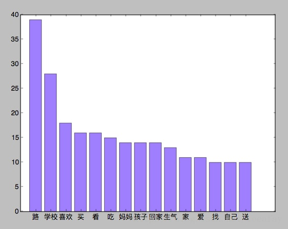

梦的数据来自于自己的记录，有人问我怎么记下来的：
梦的记录从 2015 年下半年开始。在这里只做简单的词频分析和情绪统计。依赖了 Jieba 和百度的 AipNlp。
梦有一个性质：大片的内容都是混乱、缺乏逻辑的，类似“黄龙江蓝牙”和今敏《Paprika》中的大片独白。
| 时间 | 阶段 | 文件大小 |
|---|---|---|
| 2015 年 | 2015 年 5 月开始 | 16kb |
| 2016 年 | 全年 | 20kb |
| 2017 年 | 全年 | 37kb |
| 2018 年 | 全年 | 32kb |
| 2019 年 | 全年 | 12kb |
做梦的总量比较平均，这几年没有发生太大的变化，除了 2016 年稍微少一些，2016 年有三个月为空值。在做梦数量上就不太相同了，下面的条形图代表从 2015-2018 年每个月的做梦数量。2017 年不论频率还是数量都是最多的一年。而较为突出的几个时间段大概为为：16 年 6 月、16 年 11 月、17 年 2 月和 18 年 3 月，在这几个月我都有非常非常糟糕的回忆，所以心情不好也许是导致做梦变多或是对梦的内容有印象（能够被记录下来）的原因之一。
Year Mean STD Max Min MostDream LessDream
0 2015 5.12 1.62 8.0 3.0 11 7
1 2016 6.44 3.89 13.0 2.0 10 7
2 2017 8.00 3.54 15.0 1.0 1 10
3 2018 4.67 3.40 9.0 1.0 2 1
统计发现，最常做梦的月份是 1、2、10、11，而不常常做梦的月份是 1、10、7 月（2 次）。看来 7 月真的不太会做梦，而 1 月和 10 月要么就不太做梦，要么就使劲做梦。
从平均数和标准差来看，18 年的梦稍微少了一点，这么看来 18 年的心情可能比前三年稍微好一点（证据在第一自然段）。而 15 年的标准差最低，说明 15 年的梦比较平均，15 年以后每个月做梦数量差别有点大。做梦的最大月份出现在 17 年 2 月，这个月真的是很不愉快的一个月。
根据弗洛伊德《梦的解析》，梦的材料来自于日常的生活。这一点确实如此：吃、学校、买、电梯、上课、聊天、下雨、下雪、裙子。比较正常。
人名的词频是非常高的，具体的人就是爸妈，姥姥姥爷，室友和其他的朋友。
名人：李泽言出现了两次，陈伟霆居然有四次，我最喜欢的吴彦祖只有一次，难过。
国家：德国是最多的，5 次，其后是美国日本，各 4 次。ps：夏威夷居然出现了两次。
低频词数量巨大，内容天马行空：西湖四次，（也许应该再去一次）。还有医院、大提琴、战争、婚礼、血、坠落、跳楼、联合国、丫鬟、庙会、化学、飞船、实验室、基地、风车、舰娘、复仇、和歌山。
关于情绪：消极情绪词几乎是积极词的二倍…看来我真的不是很开心
博士出现了四次。。。。。
低频词（在该素材中，<=4 的词均可视为低频词）的数量占到整体的 90%（1225/1337），而加权以后，低频词占到整体的 71%。

上图是我梦中最常出现的 15 个词汇。回家和家都有上榜，而学校和路是最高的。买看吃比妈妈还多，不知道如果我妈看到这里会不会生气。。。
## 语料与分词
corpos = str(file)
corpos = is_ustr(corpos)
stopwords = {}.fromkeys(['我', '和','梦到','中国','江苏省','南京市','上海路',' ','然后','我们','去','一个',
'他','你','是','但','了','的','在','年','月','日','但是','都','要','她','还','有','不',
'也','让','被','来','上','走','到','带','他们','大家','问','知道','宁海','发现','没有','于','没','个',
'特别','着','说','可能','会','对','不对','次','就','给','一起','里','还有','很','梦见','后来','我梦到','给',
'一起','好像','把','看到','告诉','能','怎么','那个','这个','还梦到','为了','从','上海'])
seg_list = jieba.cut(corpos, HMM=True)
## 词频统计
segStat = {}
for seg in seg_list:
# seg = seg.encode('gbk')
if seg not in stopwords:
if seg in segStat:
segStat[seg] += 1
else:
segStat[seg] = 1
该怎么判断这部分的准确性呢？目前还没有找到什么好的办法。我仅仅随机抽取了几条积极或消极情绪特别明显的梦：
电梯升降，门是玻璃，总停不对的位置，考试，考化学，我什么都不会。
{'log_id': 414761676809129532, 'items': [{'sentiment': 0, 'negative_prob': 0.983052, 'positive_prob': 0.0169484, 'confidence': 0.962337}]}
和 X 一起写作业，奇怪海生物，梦见了死去的鲸鱼。X 妈妈的黄围巾送给我，我扮成了印度女郎，要回家但是忘记拿身份证了，路上拦了私家车帮我，但是路上撞了个大巴车。
{'log_id': 1157376832996665723, 'items': [{'sentiment': 2, 'negative_prob': 0.0790483, 'positive_prob': 0.920952, 'confidence': 0.824337}]}
穿越到小学，还带了洗手液，我在学校面包店买了三个喜欢的面包，X 来我们学校参加文艺汇演，制作道具，我帮她做，把胶水涂错了位置，她生气了。后来我坐高铁（木质。轨道铁）铁路和路登宽，在天上运行，后来 X 用撬棍把我救走了。下了车发现 X 爸爸是微服私访的皇帝，在医院边上开了一家冷饮店，X 都有妻子，我还要叫她大嫂。
{'log_id': 8846260086195230364, 'items': [{'sentiment': 2, 'negative_prob': 0.0334327, 'positive_prob': 0.966567, 'confidence': 0.925705}]}
大家一起回高中读书，我的学习能力变得好差。
{'log_id': 3913672109147713363, 'items': [{'sentiment': 0, 'negative_prob': 0.798251, 'positive_prob': 0.201749, 'confidence': 0.551669}]}
不得不讲的是，在回顾梦的时候，我发现考试、学习这类梦占到了我梦中比例的很大一部分，我总是在梦里担心自己变笨、学习成绩变差、考试考砸。
周公解梦：梦见考试考砸预示着运势普通,自己需要提高警惕,避免上当受骗,过段日子运势会旺盛。好的，我记住了“过段日子运势会旺盛”。这个情绪判断的结果，我觉得直观感受来看准确率还是很高的，而大多数的梦其实是不包含明确的情绪的。
client = AipNlp(APP_ID, API_KEY,SECRET_KEY)#ID和密码可以到百度AI申请。
result=client.sentimentClassify(item)
使用 LDA 算法进行主题提炼，由于素材本身比较小，所以结果设得也小一些：
结果如下：
Topic is: 0
毕业设计 毕业 欺负 没开 水淹 没带 水里 死去 污渍 汇演
Topic is: 1
水淹 沙子 气坏 XX 毕业设计 没带 毕业 污渍 水里 汇演
Topic is: 2
死去 污渍 水彩笔 比较 水淹 毕业设计 没带 水里 毕业 残暴
Topic is: 3
没带 一下子 求婚 XX 水淹 毕业设计 水里 死去 毕业 汇演
Topic is: 4
水里 汇演 残暴 毛衣 水淹 毕业设计 没带 死去 毕业 一下子
这是啥意思？不知道是不是实施算法的过程有问题，用 topic2 组个话题吧：我家被残暴的大水淹了，墙上都是污渍，比较了一下，我选择用水彩笔修补。毕业没带毕业设计，只能去死。
这个风格倒是很像一个梦。
feature_num=20
vector = CountVectorizer(strip_accents='unicode',max_features=feature_num)
source = vector.fit_transform(df.Word)
## print(source)
topic_num=5
lda = LatentDirichletAllocation(topic_num,max_iter=50,learning_method='online')
lda.fit(source)
def show_topic(model,feature,n_topic):
for topic_id,topic in enumerate(model.components_):
print("Topic is: ",topic_id)
print(" ".join([feature[i]
for i in topic.argsort()[:n_topic -1:-1]]))
print()
show_topic(lda,vector.get_feature_names(),10)